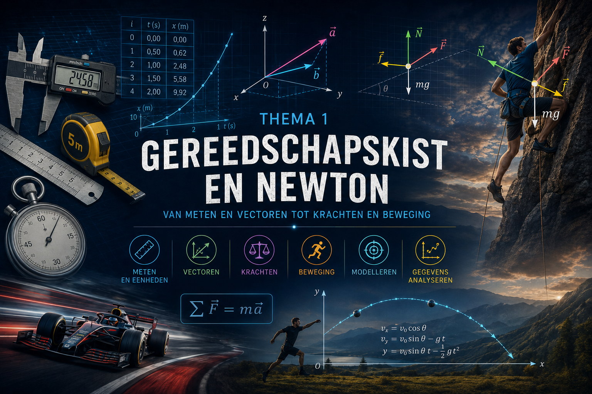
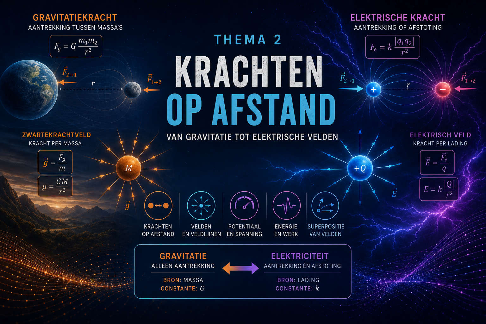

Overzicht van de hoofdstukken
Fysica begint met waarnemen. We meten een afstand, bepalen een tijd, vergelijken snelheden of onderzoeken welke krachten op een voorwerp werken. Maar een meting levert pas bruikbare informatie op wanneer we precies weten wat we meten en hoe nauwkeurig we dat kunnen doen.
In dit eerste thema vullen we daarom onze fysische gereedschapskist. We werken met fysische grootheden en SI-eenheden en leren meetresultaten correct noteren en interpreteren. Beduidende cijfers, wetenschappelijke notatie en meetnauwkeurigheid helpen ons om resultaten weer te geven zonder meer nauwkeurigheid te suggereren dan onze metingen toelaten.
Daarna maken we de stap van getallen naar vectoren. Sommige grootheden, zoals massa en tijd, worden volledig bepaald door hun grootte. Andere, zoals kracht, verplaatsing en snelheid, hebben ook een richting en een zin. We leren zulke vectoriële grootheden voorstellen, ontbinden en combineren. Die vaardigheden zullen doorheen de volledige cursus voortdurend terugkeren.
Met deze gereedschappen keren we vervolgens terug naar een van de centrale vragen van de klassieke mechanica: waardoor verandert de beweging van een voorwerp? De wetten van Newton verbinden kracht, massa en versnelling en vormen daarmee een krachtig model om beweging te verklaren en te voorspellen.
We leren krachten herkennen en correct voorstellen in een krachtendiagram. Vervolgens bepalen we de resulterende kracht en onderzoeken we wat die vertelt over de beweging van een voorwerp. Daarbij maken we een belangrijk onderscheid tussen evenwicht en beweging: een voorwerp waarop de resulterende kracht nul is, hoeft immers niet noodzakelijk stil te staan.
Doorheen het thema leren we ook fysische problemen systematisch aanpakken. We onderscheiden gegeven en gevraagde grootheden, maken schetsen en krachtendiagrammen, kiezen een geschikt fysisch model, voeren berekeningen uit en controleren of ons antwoord fysisch betekenisvol is.
Wiskunde vormt daarbij de taal van de fysica. Eenheden helpen ons resultaten controleren, vectoren beschrijven richting en grootte en vergelijkingen drukken verbanden tussen fysische grootheden compact uit. Metingen en experimenten verbinden die wiskundige modellen vervolgens met de werkelijkheid.
Zo bouwen we in dit eerste thema de gereedschapskist op die we in de rest van de cursus nodig hebben: nauwkeurig meten, correct rekenen, vectorieel denken, krachten analyseren en fysische problemen systematisch oplossen.
Thema1-Newton/1-Parate-kennis Thema1-Newton/2-Newton

Overzicht van de hoofdstukken
Sommige krachten werken zonder rechtstreeks contact. De aarde trekt een appel aan, de maan blijft in haar baan rond de aarde en twee elektrische ladingen kunnen elkaar aantrekken of afstoten zonder elkaar aan te raken. Hoe kunnen zulke wisselwerkingen op afstand ontstaan en hoe kunnen we ze wiskundig beschrijven?
In dit thema starten we met gravitatie. We onderzoeken hoe twee massa’s elkaar aantrekken en hoe de gravitatiekracht afhangt van hun massa en onderlinge afstand. Daarbij bouwen we voort op de wetten van Newton: gravitatiekrachten vormen actie-reactieparen en meerdere krachten kunnen vectorieel worden gecombineerd tot één resulterende kracht.
Vervolgens introduceren we het begrip gravitatieveld. In plaats van alleen te kijken naar de kracht tussen twee afzonderlijke massa’s, beschrijven we hoe een massa de ruimte rondom zich beïnvloedt. Met veldvectoren en veldlijnen kunnen we die invloed zichtbaar maken en onderzoeken hoe de veldsterkte verandert met de afstand.
Daarna maken we de stap naar elektrische interacties. We onderzoeken wat elektrische lading is, hoe voorwerpen geladen kunnen worden en waarom sommige materialen elektrische lading gemakkelijk verplaatsen terwijl andere dat nauwelijks doen. Ook elektrische influentie laat zien dat ladingen elkaar kunnen beïnvloeden zonder rechtstreeks contact.
Met de wet van Coulomb beschrijven we vervolgens de elektrische kracht tussen twee ladingen. De wiskundige vorm vertoont een opvallende gelijkenis met de gravitatiewet:
Die overeenkomst is geen toeval in onze cursusopbouw. Ze laat ons toe om twee fundamentele krachten met elkaar te vergelijken. Tegelijk leren we ook de verschillen herkennen: gravitatie tussen gewone massa’s is steeds aantrekkend, terwijl elektrische krachten zowel aantrekkend als afstotend kunnen zijn.
Vanuit de elektrische kracht bouwen we vervolgens het begrip elektrisch veld op. We bestuderen radiale velden, homogene velden en dipoolvelden en onderzoeken hoe veldlijnen informatie geven over richting en veldsterkte. Zo leren we opnieuw de stap maken van een kracht tussen twee objecten naar een beschrijving van de invloed in de ruimte rondom een bron.
Ten slotte bekijken we elektrische interacties vanuit het perspectief van energie. Begrippen zoals elektrische potentiële energie, potentiaal en spanning geven ons een nieuwe manier om elektrische systemen te beschrijven. Daarmee leggen we tegelijk de basis voor het volgende thema, waarin bewegende ladingen en magnetische velden centraal staan.
Doorheen het thema gebruiken we wiskunde voortdurend als taal van de fysica. Vectoren beschrijven richting en zin van krachten en velden, inverse-kwadratenwetten tonen hoe interacties met afstand veranderen en grafische voorstellingen helpen ons om veldstructuren te begrijpen.
Zo groeit één centrale gedachte uit tot een hele reeks begrippen:
En precies die structuur zullen we zowel bij gravitatie als bij elektriciteit opnieuw herkennen.
Thema2-Veldkrachten/1-Gravitatiekracht Thema2-Veldkrachten/2-Elektrische-kracht Thema2-Veldkrachten/3-Elektrisch-veld
Overzicht van de hoofdstukken